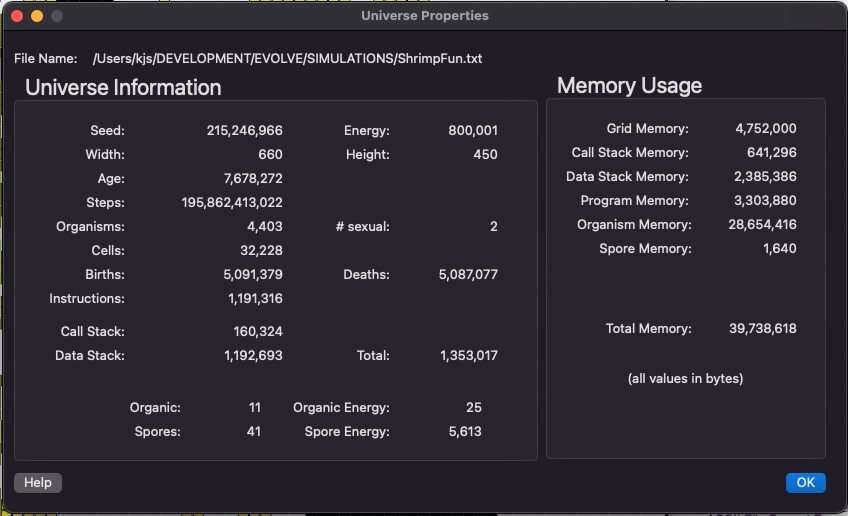

VOLVE 5.0
VOLVE 5.0
Universe Properties Dialog
This dialog displays general properties about the current simulation.
Universe Information
- Filename: This is simulation filename
- Seed: The seed value that was specified when this simulation was first created.
- Energy: The total amount of energy in this universe. This value never changes, however it is recomputed by traversing the entire simulation data structures and adding up all the energy. This is debug feature. This value could also change from its starting condition if the cut/paste/delete features were used to add or remove organisms from the universe.
- Width: Width of the universe
- Height: Height of the universe
- Steps: Total number of simulation steps that have elapsed.
- Organisms: Total number of organisms
- # sexual: number of organism that were created sexually, that is with two parents instead of one parent.
- Cells: Total the number of cells (yellow squares)
- Births: Total number of organisms that have been born since the beginning of this simulation.
- Deaths: Total number of organisms that have died since the beginning of this simulation.
- Instructions: Sum of all program sizes for all organisms.
- Call Stack: Sum of elements in all call stacks for all cells.
- Data Stack: Sum of elements in all data stacks for all cells.
- Total: Total stack elements (Call stack + Data stack)
- Organic: Total number of organic material that laying around (food) (white squares).
- Organic Energy: Total amount of energy that is contained in organic material (white squares).
- Spores: Total number of spores in the universe (blue squares).
- Spore Energy: Total amount of energy that is contained in spores material (blue squares).
Memory Usage
This section just adds up all the memory that this simulation is using. All values are in bytes.